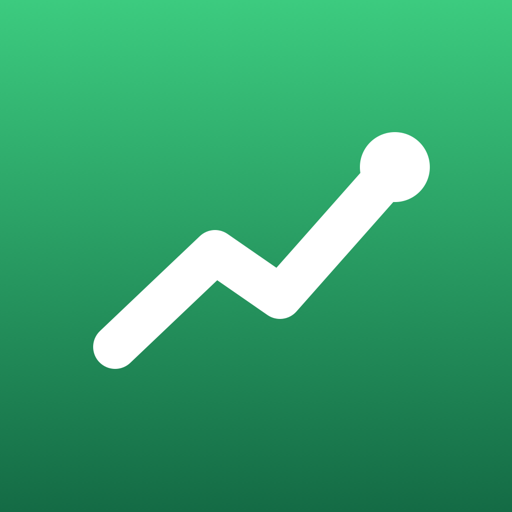

GreenEdgeAccessibility in GreenEdge
Win the day. See the trend.
GreenEdge is built on green, yellow and red, so it has to work for people who can't tell those apart, and for people who don't use the screen at all. This page says what it supports and where the limits are.
VoiceOver
Every screen works with VoiceOver. A day reads as its date and its rating in words; charts read as a summary of what they show; buttons say what they do and what state they're in.
Larger text
GreenEdge follows the text size set in the Settings app, up to the largest accessibility size. Everything meant for reading grows all the way. Figures to glance at stop at about 235% and wrap onto more lines, and navigation and chart keys stop at about 165%, so the page isn't filled before you reach your days.
Colour is never the only signal
Each colour carries its own mark: a tick for green, a dash for yellow and a cross for red. They're always shown, and Differentiate Without Colour adds them to the smallest squares in the Year view too.
Dark Mode and motion
GreenEdge has a full dark appearance. With Reduce Motion on, animations are shortened or replaced with fades.
Contrast
With Increase Contrast turned on in the Settings app, GreenEdge deepens its green, yellow and red and sets white text on them, and its grey text darkens, so text is at 4.5 to 1 or better against what's behind it, in light and dark appearance. It follows Bold Text and Reduce Transparency too. With Increase Contrast off, the brighter everyday colours are used, and some coloured figures are below that level. Pictures you share from the app always use the everyday colours.
What isn't claimed yet
Voice Control hasn't been tested. The app has no video or audio of its own, so captions and audio descriptions don't apply.
Something not working for you?
Email greenedgeapp@gmail.com. Accessibility problems are treated as bugs and fixed first.